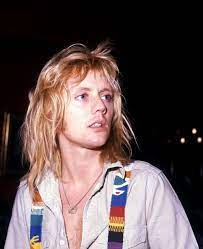

 Roger Meddows Taylor atau Roger Taylor (lahir di Norfolk, Inggris, 26 Juli 1949; umur 72 tahun) adalah seorang musisi, penyanyi, penulis lagu, dan multi-instrumentalis Inggris, paling dikenal sebagai drummer untuk band rock Queen.Sebagai seorang drummer, Taylor diakui di awal kariernya karena suaranya yang unik. Ia dipilih oleh pendengar radio sebagai drummer terbesar kedelapan dalam sejarah musik rock klasik dalam jajak pendapat yang dilakukan oleh Planet Rock pada tahun 2005.
Sebagai penulis lagu, Taylor menyumbangkan lagu-lagu ke album-album Queen sejak awal, menyusun setidaknya satu lagu di setiap album, dan sering menyanyikan vokal utama pada komposisinya sendiri. Dia menulis atau ikut menulis tiga nomor 1 Inggris ("These Are the Days of Our Lives", "Innuendo" dan "Under Pressure") dan menyumbang lima hit besar selanjutnya, ("Radio Ga Ga", "A Kind of Magic", "Heaven for Everyone", "Breakthru", dan "The Invisible Man")
Ia juga penulis utama pada hit sepuluh besar internasional " One Vision", meskipun lagu tersebut dikreditkan ke seluruh band. Dia telah berkolaborasi dengan artis seperti Eric Clapton, Roger Waters, Roger Daltrey, Robert Plant, Phil Collins, Genesis, Jimmy Nail, Elton John, Gary Numan, Shakin 'Stevens, Foo Fighters , Al Stewart, Steve Vai, Yoshiki, Cyndi Almouzni, dan Bon Jovi. Sebagai produser, ia telah memproduksi album oleh Virginia Wolf, Jimmy Nail dan Magnum .
Selain pekerjaan drumnya, Taylor terkenal dengan jangkauan vokal falsetto- nya. Dia terkadang memainkan keyboard, gitar, dan bass pada lagu-lagunya sendiri. Selama 1980-an, di samping karyanya dengan Queen, ia membentuk band paralel yang dikenal sebagai Cross , di mana ia adalah penyanyi utama dan gitaris ritme. Selama awal 1980-an, Taylor juga panelis di acara kuis populer Inggris Pop Quiz , yang dibawakan oleh Mike Read. Pada 2014, ia muncul di The Life of Rock dengan Brian Pern sebagai dirinya sendiri.